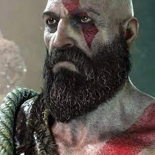
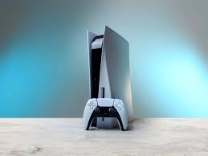

Personal information
- Name: Cristopher Judge
- Address: Santa Monica Street
- Phone numbre: 0485539482
- Email address: chr.jud@hotmail.com

Hobbies
- Football
- football, also called association football or soccer, game in which two teams of 11 players, using any part
of their bodies except their hands and arms, try to maneuver the ball into the opposing team’s goal.
Only the goalkeeper is permitted to handle the ball and may do so only within the penalty area surrounding the goal.
The team that scores more goals wins.
Football is the world’s most popular ball game in numbers of participants
and spectators. Simple in its principal rules and essential equipment,
the sport can be played almost anywhere, from official football playing fields (pitches) to gymnasiums,
streets, school playgrounds, parks, or beaches. Football’s governing body,
the Fédération Internationale de Football Association (FIFA), estimated that at the turn of the 21st century
there were approximately 250 million football players and over 1.3 billion people “interested” in football;
in 2010 a combined television audience of more than 26 billion watched football’s premier tournament,
the quadrennial month-long World Cup finals.

Click here to know more about football
- Gym
- A gym is a club, building, or large room,
usually containing special equipment,
where people go to do physical exercise and get fit.

This is a link to the of fitnesscentrum
- gaming
- Gaming refers to playing electronic games, whether through consoles,
computers, mobile phones or another medium altogether.
Gaming is a nuanced term that suggests regular gameplay, possibly as a hobby.
Although traditionally a solitary form of relaxation,
online multiplayer video games have made gaming a popular group activity as well.

This is a link to a gaming website